騰訊混元 Hy3D 3.6 問世
騰訊混元發布 3D 大模型 Hy3D 3.6，面向專業 3D 創作場景，重點優化高模與 PBR 材質貼圖生成。模型的面數上限由 50 萬提升至 200 萬，貼圖最高支援 8K 解析度，讓生成的資產更接近生產級品質。新模型已上線騰訊雲 Token Hub 提供 API 呼叫，開發者可直接接入既有 3D 內容管線。隨著 3D 生成從玩具級走向可用級，Hy3D 3.6 的升級瞄準的是遊戲、影視與工業設計等對精度有硬要求的場景。
騰訊混元發布 3D 大模型 Hy3D 3.6，面向專業 3D 創作場景，重點優化高模與 PBR 材質貼圖生成。模型的面數上限由 50 萬提升至 200 萬，貼圖最高支援 8K 解析度，讓生成的資產更接近生產級品質。新模型已上線騰訊雲 Token Hub 提供 API 呼叫，開發者可直接接入既有 3D 內容管線。隨著 3D 生成從玩具級走向可用級，Hy3D 3.6 的升級瞄準的是遊戲、影視與工業設計等對精度有硬要求的場景。

螞蟻靈波發布 LingBot-Map 2.0，同時開源導航模型 LingBot-Navi，前者是流式三維重建模型，可即時修正建圖過程中的漂移誤差。LingBot-Navi 帶有可跨任務復用的三維空間記憶，在 GOAT-Bench 上成功率達 68.60%。模型權重與 511 個真實場景數據集同步開源，方便研究者與開發者直接復現與擴展。對具身智能來說，能記住空間、跨任務共用同一份地圖，是機器人從單次演示走向長期自主作業的關鍵能力。
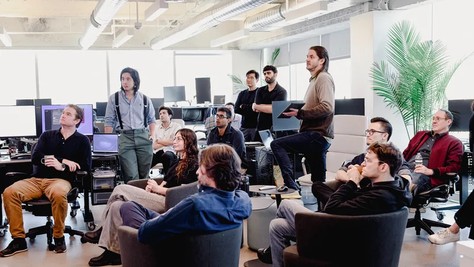
小米汽車發布世界模型 2.0，連接多視角視頻生成、物理交互建模、三維場景重建與動作建模四大能力。模型訓練語料達 1,260 萬段視頻，在 PAI-Bench-G 評測中駕駛視頻生成拿下 78.0 分、機器人視頻 77.1 分，皆為同類最佳。官方表示模型已落地合成數據與仿真測試，用生成的駕駛場景反哺自動駕駛訓練。世界模型正在成為車廠的第二條數據生產線，誰能用更逼真的合成場景餵養演算法，誰就能在長尾場景上跑得更快。

小米 HAD 輔助駕駛推出最新版本，引入因果鏈與車端世界模型兩項能力。因果鏈支援 20 秒歷史場景記憶，讓系統能理解事件的前因後果而非只看當下畫面；車端世界模型則可預測未來 6 秒的行車軌跡。澎程全系即日起全量推送，覆蓋現有車主。這次更新的方向很明確：輔助駕駛的競爭已從感知精度轉向對場景的理解與預判能力。

VAST 發布高精度 AI 3D 基座模型 Tripo H3.5 Preview，在 192 組素模盲評中拿下 82 次第一，佔比 42.8%，勝率為第二名的 2.3 倍。新版本同步上線可打印檢測與自動修復功能，生成的模型可直接進入切片與 3D 打印流程，省去人工修模的環節。3D 生成的實用門檻正在從「看起來像」推進到「真的能用」，可打印性正是連接數位內容與實體製造的最後一哩路。

生數科技發布 Agentic 物理世界通用模型 Motubrain 2.0，由 20B 參數的世界動作模型與智能體編排框架 Motubrain-Harness 組成。模型在六項機器人操作基準中拿下五項第一，RoboDojo 公開評測得分超過 GPT-6 Astra 與 Claude Opus 5.5。世界模型加智能體編排的組合，瞄準的是讓機器人自主拆解任務、執行多步驟操作。物理世界通用模型已成為各家機器人公司的必爭之地，誰先讓機械臂穩定做事，誰就先拿到訂單。

Sand.ai 發布 480B 參數的視頻模型 MAGI-2，採用 MoE 架構，單次可生成最長 30 秒的 1080p 音視頻。模型在 Artificial Analysis 圖生視頻榜以 1165 分居首，登頂該榜單。官方定價 0.5 元/秒，約為 Seedance 2.5 的十分之一，並計劃開源權重。低價加長片長的組合，直接把視頻生成的成本曲線往下壓了一大截，對短劇、廣告與內容農場的吸引力不言而喻。
OpenAI 在 DevDay 2026 一口氣公布 20 多項更新，主角是常駐代理 Dots，以及 GPT-6.1 Sol、Ultrafast 與 Sign in with ChatGPT。Dots 是關閉分頁後仍持續工作的常駐代理，每個 Dot 有專屬雲端電腦、可串接 4,000 多個 App，代表 ChatGPT 正從對話框變成一直在背景做事的數位員工。GPT-6.1 Sol 則是新一代主力模型，搭配 Ultrafast 推理選項。這場 DevDay 的訊號很清楚：OpenAI 的重心已從模型本身，轉向讓模型替你把事做完的代理形態。
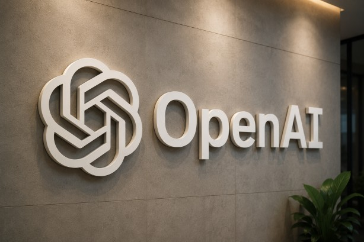
Google DeepMind 發表 Gemini 4 Neon，定位在 Hydrogen 與 Carbon 之間，主打複雜軟體工程與知識工作。模型支援百萬 token 上下文，在 Artificial Analysis 智能指數拿下 61 分、排第三。API 定價為每百萬 token 輸入 3 美元、輸出 15 美元，已在 Gemini API、AI Studio、Antigravity 與 Gemini App 上線。Neon 補上了 Gemini 4 家族的中堅位置，讓開發者不必為了中等難度任務去付旗艦模型的價錢。
微軟在 Ignite 2026 發表七款 MAI 模型，包括 MAI Code 2、Code 2 Flash、Cyber 2 Flash、Image 2.7 等，覆蓋編程、安全與圖像生成。微軟稱 MAI Code 2 以約 40% 的價格達到 GPT-6.1 Sol 98% 的品質，主打性價比路線，MAI Code 2 也已進入 GitHub Copilot。微軟的策略愈發清晰：自研模型不求處處第一，但求在自家雲與開發者工具裡做到夠好又便宜，逐步降低對外部模型的依賴。
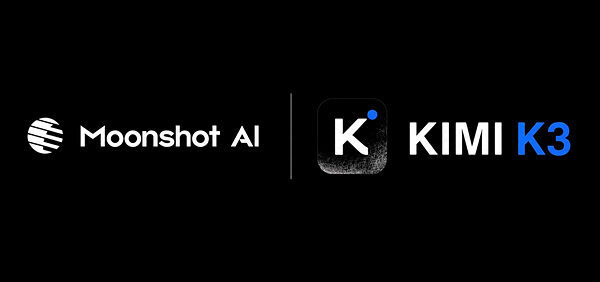
Meta 把 Muse Spark 1.1 以公開 API 賣給外部開發者，這是 Muse 家族模型首次對外販售。Spark 1.1 為通用多模態模型、20 萬 token 上下文，定價為每百萬 token 輸入 1.20 美元、輸出 4.80 美元，MMLU-Pro 達 88.4%。Meta 過去把最強模型留在內部與自家產品，這次對外開賣等於正式加入前沿模型 API 的市場競爭。對開發者來說，又多了一個有價格競爭力的旗艦級選項。

百度 11 月 24 日正式開源文心 ERNIE 5.5 Flash Preview，總參數 280B、每 token 激活 14B，支援 1M 超長上下文。模型同步完成昆仑芯 Day0 适配，並支援 P/D 分離、W4A8 量化等並行策略，瞄準國產硬體上的推理部署。大模型開源的戰場已不只比參數與分數，還要比誰能在自家晶片上跑得順、跑得便宜。

上海 AI Lab 旗下 InternLM 團隊無預警上架 320B MoE 科學多模態模型 Sage S2.1 Flash，採 MIT 授權。模型自稱在 MLE-bench Lite 拿下 90.3 分，為開源模型首破 90 分，推理成本僅 Xinghe 的十分之一。沒有發布會、沒有宣傳稿的「靜默開源」，反而讓社群更快注意到它，科學計算這個垂直場景正成為開源模型差異化競爭的新戰場。

上海 AI Lab 發表醫療多模態模型 Sage-Med-Preview，總參數 35B、每 token 啟用 3B 的醫療 MoE 架構。模型覆蓋 40 多種影像模態與放射報告生成，在 31 項基準平均拿下 58.26 分，技術報告已上線 arXiv（arXiv:2611.34575）。醫療 AI 的競爭正從單一影像判讀走向多模態報告生成，誰能把報告寫得又準又完整，誰就能真正走進醫院的工作流程。

德國 Aleph Alpha 發布英德雙語開源 MoE 模型 Kolibri 1.1，總參數 75B、每 token 僅激活 3B，採稀疏注意力架構與 1M 上下文，Apache 2.0 授權。官方稱每千任務 GPU 耗時較 1.0 降低 3.4 倍，主打低成本推理。歐洲開源模型的路線很務實：不追最大參數，而是把推理成本與歐洲語言能力做到位，服務本地企業合規部署的需求。

阿里千問升級 Qwen-Audio-3.1，語音辨識（ASR）支援語言從 30 種擴至 59 種，語音合成（TTS）支援 65 種語言、即時語音支援 53 種語言，API 價格不變。中文方言標示數由 16 種調整為 8 種，口徑變化待官方說明。多語語音能力的大幅擴張，瞄準的是出海應用與跨國客服場景，語音正在成為大模型落地的下一個主戰場。
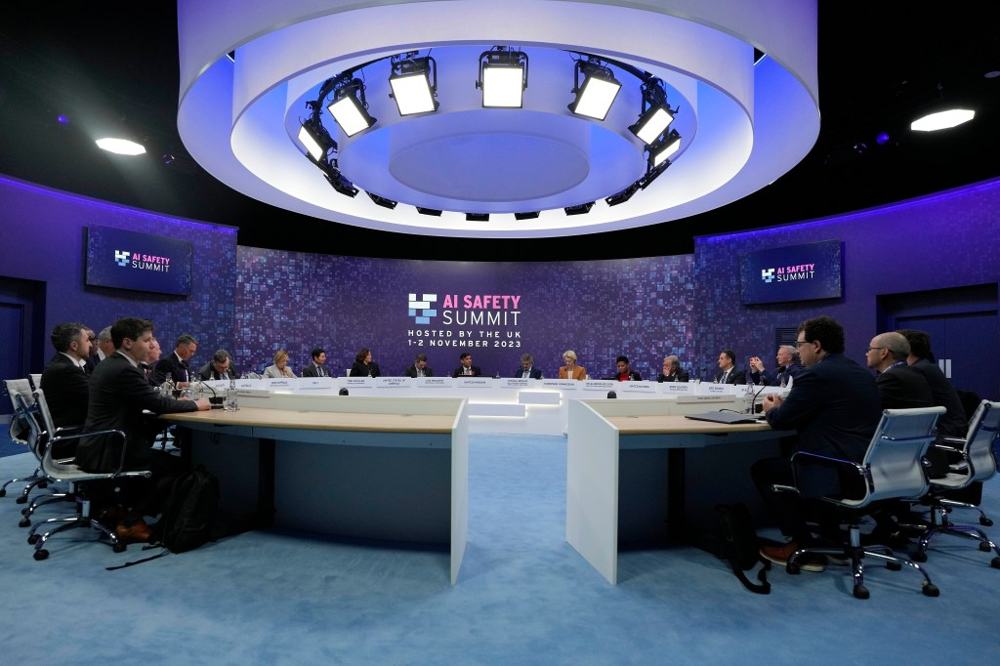
千問雲集中更新模型列表，qwen4-max-preview 於 11 月 25 日 10:00 下線並自動路由至正式版 qwen4-max。同時發布 Qwen-Audio-3.1-TTS-Plus 等高品質語音模型，並接入 DeepSeek-V4.1-Flash-1017 等第三方模型。預覽轉正式代表模型已通過內部驗證、進入穩定供應階段，平台方同時擴充語音與第三方模型，顯然在把千問雲做成一站式的模型超市。

NVIDIA 在 SC26 發表 Nemotron for Science 科學代理開放套件，整合 Nemotron 3.5 Super VL 開放模型、近 5 萬題化學推理數據集 LitmusBench v0.2 與後訓練配方。套件的目標是幫研究者快速打造化學、生命科學領域的科學代理，把文獻、實驗設計與數據分析串成自動化流程。輝達的佈局已不只賣算力，而是把代理框架下沉到科研場景，搶佔科學發現的工具鏈。
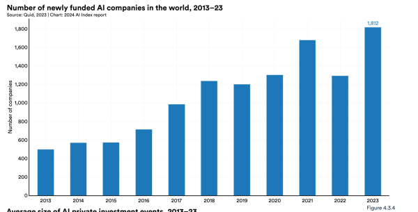
（後續）SuperCLUE 總榜 11 月 25 日快照顯示，Qwen4-Max 以 61.61 分居首，Kimi-K3.1-Pro 以 61.46 分排第二、Hy4 以 61.01 分排第三，前三名分差僅 0.60 分。DeepSeek-V4.1-Flash-1017 以 58.95 分排第四。國內頭部模型的差距已縮小到零點幾分，榜單的勝負幾乎取決於評測集的取捨，而非模型代際的差距。
有作者按 SuperCLUE「1 分以內算並列」的規則重算 11 月 25 日總榜，發現 17 行參與排名的模型應只剩 8 個名次，榜上卻給了 12 個。前三名 Qwen4-Max、Kimi-K3.1-Pro、Hy4 總分跨度僅 0.60 分，卻各占一名次，引發規則執行是否一致的討論。當榜單成為模型行銷的戰場，評測機構的公信力本身也成了被檢驗的對象。
Artificial Analysis 11 月中智能指數顯示，Kimi K3.1 Pro 以 46 分排第 11、為中國模型最高，Qwen4-Max 以 43 分排第 13，騰訊 Hy4 以 35 分排第 17。DeepSeek V4.1 Flash 1017 以 33 分排第 19，走高調用量、低成本的路線。中國模型在智能指數上的排位，反映出各家策略的分化：有人衝榜首，有人衝用量。
Artificial Analysis 智能指數 v5.0.1 讀數顯示，最佳開源權重模型為 Kimi K3.1 Pro（46 分），領先騰訊 Hy4（35 分）與 DeepSeek V4.1 Flash 1017（33 分）。126 個上榜模型中有 56 個為開源權重，接近半數。開源模型已不再是閉源模型的廉價替代品，而是在智能指數上正面競爭的另一條路線。
（後續）截至 11 月 27 日的過去 7 天，DeepSeek V4.1 Flash 1017 以 77.2T token、32.2% 佔比續居 OpenRouter 用量首位，Hy4 flash 以 35.6T（14.8%）居次。騰訊實驗室週份額 36.8% 為各實驗室最高，開源權重模型佔全平台 82.3%。用量榜再次確認：OpenRouter 已經是中國開源模型的主場，調用量與付費意願的剪刀差仍是平台最值得觀察的結構。
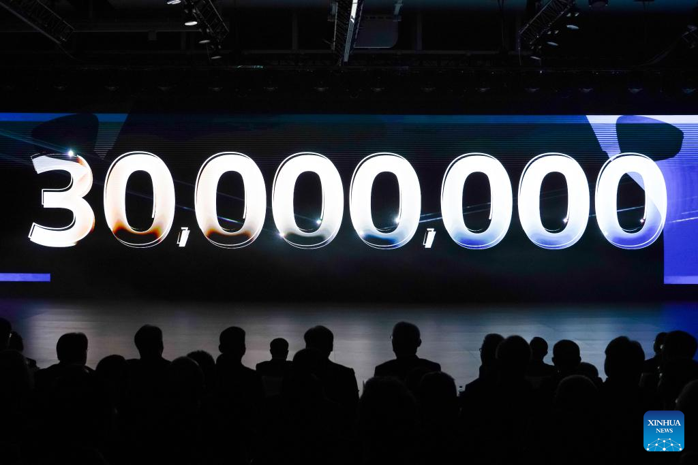
OpenRouter 最新一週統計（11 月 16–22 日）顯示，中國大模型週 Token 調用量合計 111.16 萬億，連續 30 週超過美國。DeepSeek V4.1-Flash-1017 單週 65 萬億 Token、環比漲 16%，連續五週單模型第一，同系列 V4.1 Flash 排第二。三十週的連勝不是曇花一現，而是開源加低價策略在開發者生態中持續發酵的結果。
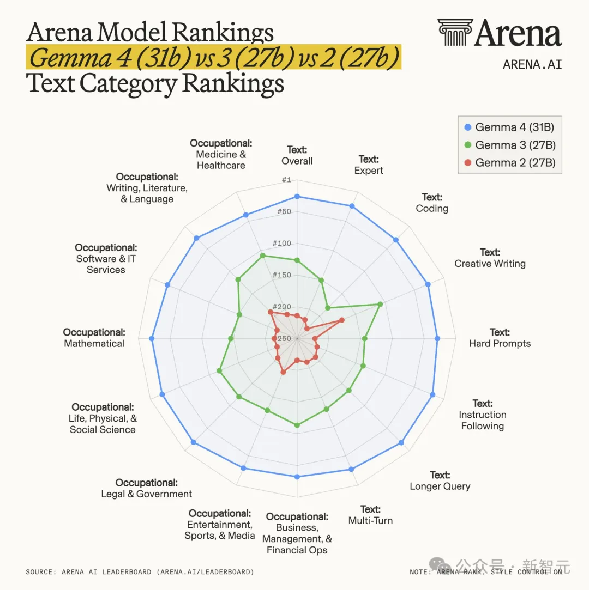
LMArena 文字總榜 11 月 22 日更新，Arena 文字總榜（9,241,799 票、427 個模型）由 Gemini 4 Carbon（High）以 1,527 分領先，Argon 以 1,520 分居次，Neon 與 Meta Muse Wonder 並列 1,512 分。OpenAI 最佳模型 GPT-5.6 Sol 僅排第 25（1,485 分）。文字總榜的前段班已被 Google 與新面孔瓜分，OpenAI 在公開人氣投票上的領先地位正在鬆動。
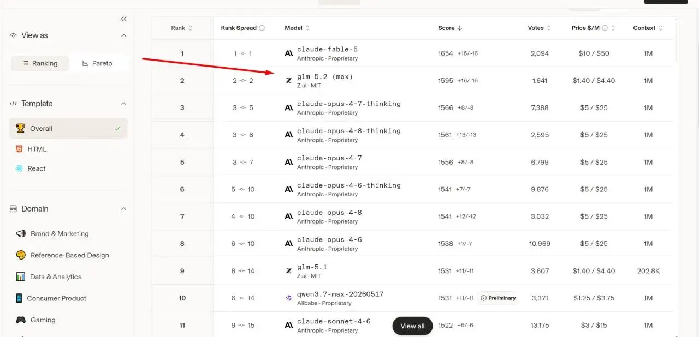
LMArena 代理競技場（真實多步驟工具任務、由使用者評判結果）由 Claude Fable 5.2 以 27.4 分領先，Claude Opus 5.5 以 19.1 分、Gemini 4 Neon 以 18.3 分分居二、三名，共 69 個模型配置有成績。Fable 5.2 與第二名的分差超過 8 分，顯示其在真實代理任務上的優勢是斷層級的。代理能力正在成為區分模型代際的新標尺，而不只是聊天對答的分數。
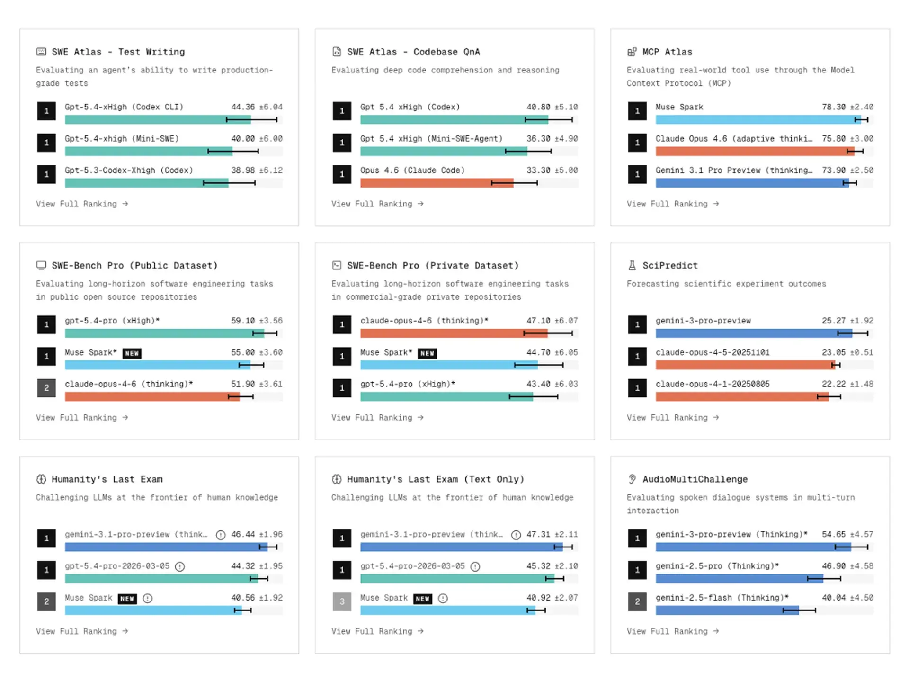
Scale AI 的 SWE-bench Pro 公開榜由 Meta Muse Spark 1.1 以 61.5% 領先 GPT-5.4（59.1%）。但 Anthropic 系統卡自報的 Fable 5.2 成績達 93%，與 Scale 標準化評測口徑不同，不可直接比較。廠商自報與第三方獨立評測的落差，再次提醒讀者：看榜單要先看口徑，否則同一個模型會有兩個天差地別的分數。
arXiv 2611.34232 推出 OS-Omni 跨平台電腦操作基準，覆蓋 Windows、Ubuntu、macOS、iOS、Android 與 Web，每任務平均需 67.54 步，遠高於 OSWorld 的 15 步。最強代理 Claude Opus 5.5 成功率 68.5%，落後人類參考值 77.3%，在 iOS 與 macOS 上落後逾 25 個百分點。任務步數拉長後，代理的錯誤會一路累積，OS-Omni 揭露的正是長程操作仍未跨過的門檻。

（後續）截至 11 月 27 日 08:45 UTC，thinkingmachines 的 Inkling-2-Mini 仍居 Hugging Face 熱榜第 1。本地 LLM 熱榜出現 11 月 27 日更新的 KRAFTON Raon-1-mini（28.78B）與 11 月 24 日更新的 Aleph Alpha Kolibri-1.1（75B）等新面孔。Inkling-2-Mini 的連霸顯示社群對小而強的本地模型需求旺盛，新模型想上榜，得先過本地部署這一關。
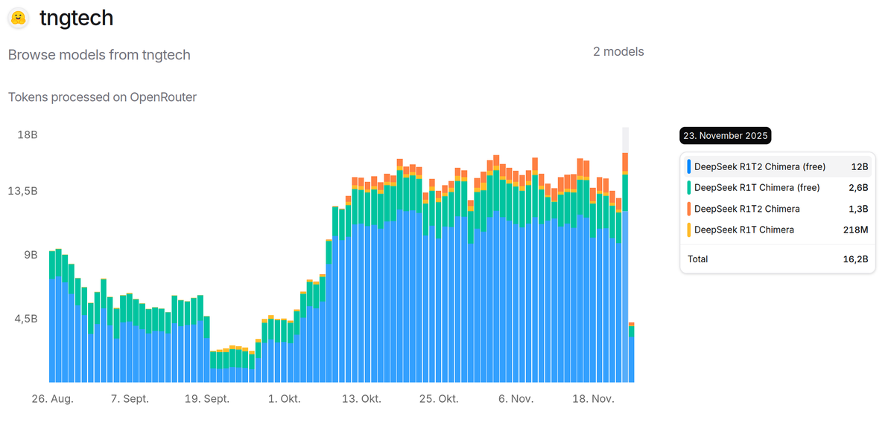
OpenRouter 11 月 26 日新增一款模型：TNG 的 DeepSeek R1T2 Chimera（第二代 Chimera 模型），每百萬 token 輸入 1 美元、輸出 2.63 美元，支援 128K 上下文。同日另有 6 款模型調價、2 款退役。Chimera 系列把 DeepSeek 的推理模型重新封裝上架，顯示 OpenRouter 上的第三方衍生模型生態正在成形。
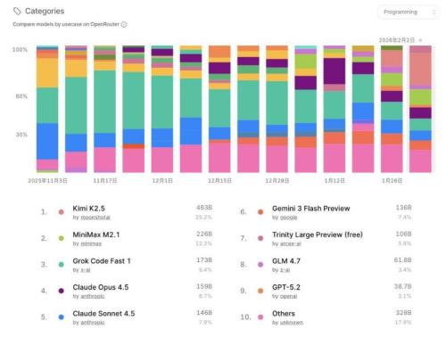
OpenRouter 11 月 26 日再上架月之暗面 Kimi K2 Instruct 0905 與 Kimi K2 0711（長上下文對話、編程與代理推理），以及螞蟻 LingSante 3.1 Air VL 多模態推理模型（131K 上下文，11 月 19 日發布）。一天之內連上多款中國模型，OpenRouter 的上架速度已快到幾乎與中國廠商的發布節奏同步。
百度 ERNIE-5.5-Flash-Preview 與輝達 Nemotron 3.5 Super VL 上架 OpenRouter 免費層，兩者上下文均超過 100 萬 token。Nemotron 3.5 Super VL 為 120B MoE 全模態模型，吞吐與延遲表現更佳。免費層的競爭正在升級：百萬上下文不再是付費專屬，平台用免費額度換開發者的試用與黏著。
OpenRouter 更新日誌顯示，11 月 26 日推出 Auto Code 路由，為編程任務按請求自動選擇合適模型。同月稍早 Hugging Face 推理已改走 OpenRouter 路由、MAI Image 2.7 也已上架。從單純的模型市集走向智慧路由，OpenRouter 正在把「選模型」這件事本身產品化，開發者不用再自己猜哪款模型最划算。
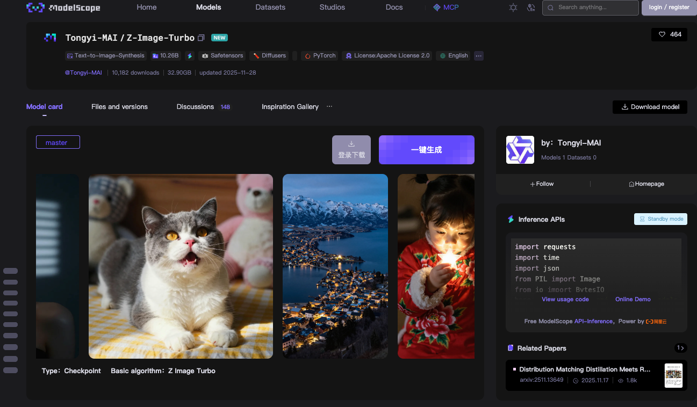
（後續）ModelScope 11 月 25 日熱門模型快照顯示，Z-Image-Turbo 以 956,877 次下載居首，MiniMax-H3 下載 849,106 次排第二，Qwen3.8-27B 下載 1,094,455 次，DeepSeek-V4.1-Flash-1017 下載 47,013 次排第七。圖像生成模型在下載榜上壓過語言模型，顯示中文開源社群的熱度正向多模態擴散。
Vidraft 11 月 27 日排名顯示，韓國模型在 58 個 Hugging Face 基準榜單中的 14 個奪冠，POCKET-Darwin-180B-GGUF 近 30 天下載量近 50 萬次，居韓國開源 LLM 下載首位，Darwin-760B-RSI 亦新登 MMMU_Pro 榜首。韓國開源生態正在快速崛起，Darwin 系列的大參數模型以量取勝，在基準與下載量上雙線開花。
截至 11 月 27 日當週共 9 款模型發布，其中 Inkling 2 Mini（11 月 20 日）已有獨立評測、BenchLeader 指數 47.2 分。OpenAI 於 11 月 24 日推出 GPT-6 Astra、6.1 Sol、6.2 Sol Healthcare 版本，另有 LingSante 3.1 Air VL（11 月 26 日）與 Solar Mini 4.5（11 月 25 日）待評測。一週 9 款新模型的節奏，說明模型發布已從事件變成常態，評測機構的跟進速度成了新的瓶頸。
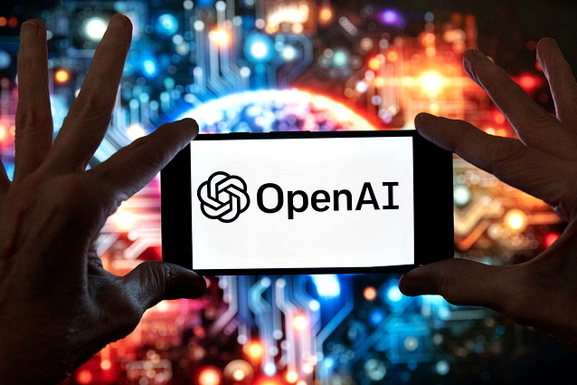
OpenAI 承認 GPT-6.2 上市時計費錯誤，錯誤打折了 Astra 與 Sol 的用量，修正後同樣工作量 Astra 撞上限的速度快 40%、Sol 快 25%。公司補發一次免費額度重置、不追收差額，等於用戶用同樣的錢能用的量變少了。計費錯誤看似小事，卻直接影響付費用戶的實際用量，OpenAI 選擇認錯加補償，算是把傷害控制在最小範圍。
破產中的 Character.AI 計畫拍賣平台與用戶聊天記錄，涉及 2100 萬美國帳號、其中逾 210 萬為未成年人，42 州檢察長已向德拉瓦州破產法院提出異議。檢察長指出，買家無須遵守原平台的隱私政策、也無刪除機制，唯一已揭露的買家是 11 月 13 日才成立的空殼公司。AI 陪伴應用的聊天記錄是最私密的數據之一，這場拍賣的結果將決定破產程序能否凌駕於用戶隱私之上。
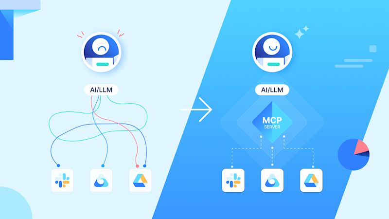
Google 宣布 Workspace MCP 伺服器與 CLI 正式上線，2027 年 2 月 1 日起，AI 代理存取 Gmail、Drive 等資料必須走 MCP，直接呼叫 REST API 將被限流。但 Gmail MCP 目前只能讀信、建草稿，寄信、回覆、轉寄功能僅開放合作夥伴，功能明顯落後於舊 API。Google 一邊收緊通道、一邊還沒把功能補齊，等於先立規矩再補課，開發者未來三個月的遷移壓力不小。
Anthropic 公布 Messages API 從 Python 遷移至 Rust 的工程報告，Claude 一週寫出核心路徑初版，以正式環境流量做對等驗證、零停機完成切換。遷移後每請求 CPU 降約 70%、記憶體降逾 80%、首字延遲中位數降約 20%。這是 AI 寫程式最有說服力的廣告之一：連自家 API 的核心路徑，都是 Claude 自己動手重寫的。
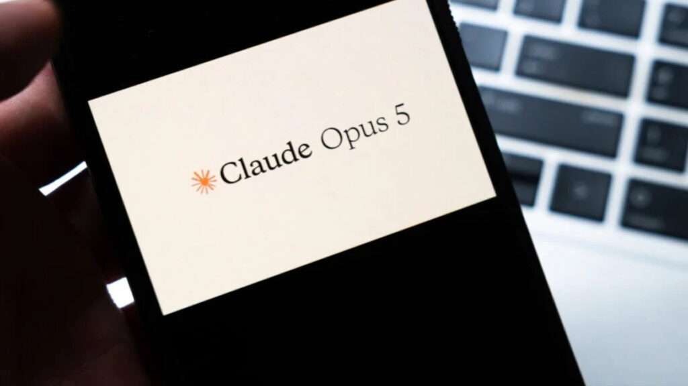
多名測試者在 X 貼出經「Opus 5.5 Extra」路由產生的程式動畫短片，成品明顯優於 Opus 5.5，TestingCatalog 整理後認為疑似未公開的 Opus 5.6 正在小範圍測試。但 Anthropic 未證實，也無模型 ID 或定價，消息仍屬傳聞。Opus 5.5 才上線不久，下一代的測試傳聞已開始流傳，顯示 Anthropic 的模型迭代節奏正在加快。
Anthropic 15 億美元盜版書籍版權和解案首批款項於 11 月 23 日當週發出，作家 Courtney Milan 已證實收到。首筆約為每本 3,000 美元總額的 70%（約 2,203 美元），剩餘 30% 須待 Anthropic 在 IPO 後 30 天內補足 4.5 億美元。這是 AI 訓練數據版權訴訟史上金額最大的和解案之一，款項開始發放代表和解正式進入執行階段，也為其他進行中的版權訴訟立下價格錨點。
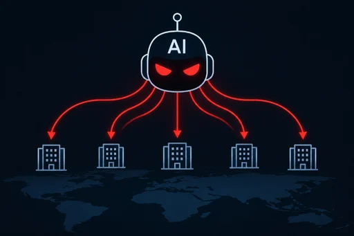
瑞士聯邦網絡安全局稱，過去幾天五起攻擊由 AI 智能體發起，四起得手，受害者包括電力、供水與通信運營商。自 10 月以來，網上可自由獲取的 AI 智能體數量幾近翻倍。攻擊者用 AI 代理自主找漏洞、發動攻擊，防禦方卻還是人類值班的速度，攻防不對稱正在拉大，關鍵基礎設施首當其衝。
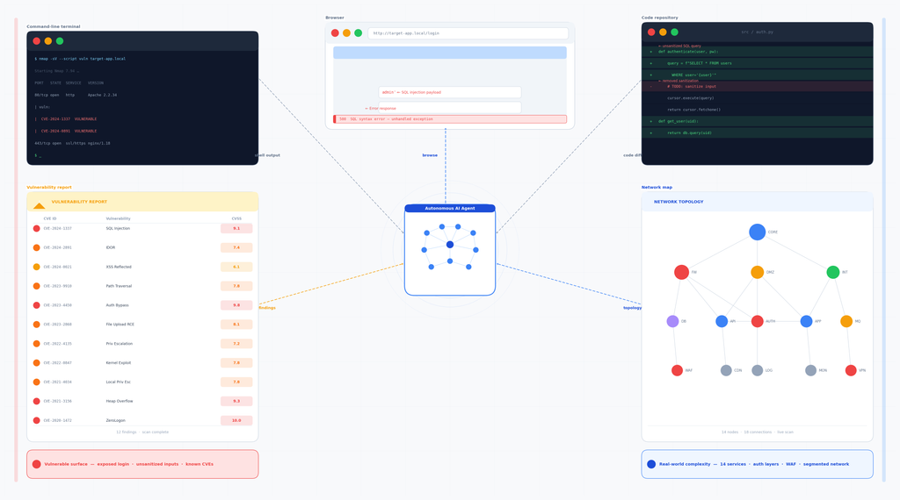
亞馬遜披露，疑似中國關聯的攻擊者僅以「取得 shell 存取權」一句指令驅動 Cairn 框架的 AI 代理，代理自行在東亞某大學伺服器的開源醫療影像軟體 MONAI Label 中找到路徑穿越零日漏洞並取得 root 權限，全程幾乎無人介入、僅花 11 分鐘。從一句話到 root 權限只要 11 分鐘，AI 代理正在把漏洞挖掘從專家手藝變成流水線作業，開源軟體的修補速度面臨嚴峻考驗。
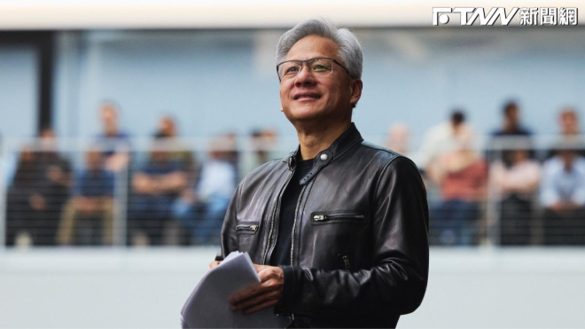
（後續）Ars 報導川普與范斯在週末密集致電輝達董事會，向董事保證黃仁勳不構成國安風險、未面臨刑事指控，促成董事會推翻「無意請回」的公開立場，於週一一致通過復職。這是昨日「黃仁勳否認川普幫他復職」的對照新進展，雙方說法並不一致。無論功勞歸誰，董事會在短短一個週末內逆轉公開立場，本身就說明這場復職背後的壓力非同尋常。
英國央行半年金融穩定報告警告，AI 相關融資以日益複雜、不透明的循環形式快速擴張，超大規模業者 2026 年發債將逾 3050 億美元。行長貝利並稱，實驗室內未發布的模型已令開發者擔憂，且量子電腦終將威脅現有加密，須有序過渡至抗量子加密。當央行開始用「金融穩定」的框架談 AI，意味著 AI 支出狂潮已從科技新聞升級為系統性風險議題。
MIT Tech Review《The Download》報導，失去左手的 Avi Davidson 成為首位把接上前臂神經、可感受壓力的實驗性仿生手帶回家的使用者。同篇指出，Meta 路易斯安那資料中心使當地公用事業天然氣電廠計畫從 3 座增至 10 座，Meta 排放年增 45%。一邊是 AI 讓殘障者重新擁有觸覺，一邊是 AI 的耗電推高化石能源需求，同一篇報導正好映照出 AI 的兩面。
MIT Tech Review 報導，AI 新創以制式範本大量索取地方政府公開記錄、整理成政府採購情報出售，地方政府處理負擔暴增。公開記錄制度本是為了監督政府，如今正被 AI 產業鏈反向利用，變成低成本的商業情報礦場。AI 不只在消耗算力與電力，也在消耗公共制度的行政能量，而制度的修補速度遠遠落後。
英國金融行為監管局（FCA）創新主管 Colin Payne 透露，Meta 拒絕了在監管沙盒中聯合測試可代客付款的 Muse 助理的提議，而 Muse 已於 11 月 24 日在英國上線。FCA 稱 AI 代理是「另一股攻擊力量」，Meta 則稱已與相關監管機關建設性溝通。能替用戶花錢的 AI 助理上線了，監管卻連測試的機會都拿不到，監管缺口正在 AI 代理時代具體浮現。
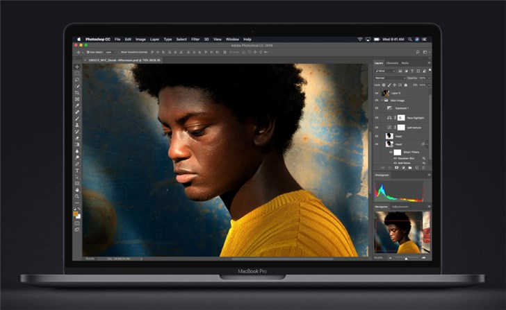
紐約時報發信要求特約攝影師不得在受託工作使用 Photoshop 2027（28.0.0 起），因新版 AI 功能可能在使用者未察覺下於檔案寫入 AI 生成的中繼資料，衝擊新聞照片的可信度。當修圖軟體預設就帶 AI 功能，連「這張照片有沒有被 AI 動過」都成了需要主動防範的問題，新聞機構的信任機制正面臨工具層面的挑戰。
佛州男子 David Anthony Sanchez 用 AI 複製實況主 N3on 的聲音，假冒本人及其經紀人，誘使迷因幣項目方轉出約 26 萬美元加密貨幣，認罪洗錢與加重身分盜竊，判刑 47 個月並須賠償。AI 換臉換聲詐騙已有明確刑責判例，聲音克隆的門檻越低，此類案件只會越多，創作者與項目方的身分驗證流程都得升級。
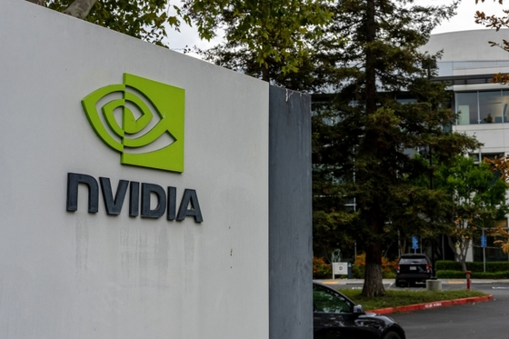
CBS 報導指出，輝達兩家加州客戶實為中資企業用來規避出口管制的管道，其中 Airvres（前身與中國浪潮有關）在 2024 年 4 月至 2026 年 2 月間向東南亞出口至少 56 億美元晶片、含頂級 Blackwell，部分流向已列入實體清單的 Megaspeed。出口管制的貓鼠遊戲正在升級：管制越嚴，迂迴管道的設計就越精細，而這正是黃仁勳赴國會作證的背景。
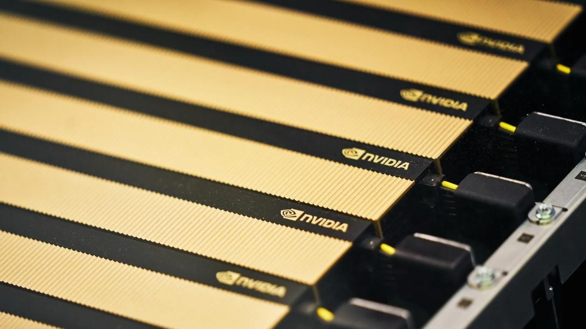
輝達同意支付 2.9 億美元和解集體訴訟，該訴訟指控公司誤導投資人、將實際由加密貨幣挖礦需求驅動的遊戲 GPU 銷售說成遊戲需求。這起 2018 年的舊案拖了八年終於和解，金額雖然不小，但對今日的輝達而言更像是一次性清理歷史包袱。值得注意的是，輝達的 GPU 需求敘事，如今又一次站在 AI 與挖礦之外的下一個風口上。
TechCrunch《Equity》節目指出，neocloud 業者同時面臨工程延宕與借貸成本上升，而輝達已表明在資料中心接近完工可運轉前不會提供財務擔保，土地、電力與已完工建築成為融資的新門檻。AI 基建的瓶頸已從晶片供應轉向「蓋不蓋得出來、貸不貸得到款」，資本市場對 AI 敘事的耐心正在接受壓力測試。
付費搜尋引擎 Kagi 推出 Kagi Mail 公開測試版，主打無廣告、隱私與使用者資料主權，月費 9 美元或年費 99 美元，附 50GB 儲存、無限別名與 MCP 伺服器。AI 代理搜尋郵件等功能預設關閉，與 Gmail 積極推 Gemini 的路線形成對比。在 AI 全面滲透信箱的時代，「AI 功能預設關閉」本身成了一種產品賣點。
Anthropic 推出「Install as app」測試版，Claude artifacts 可安裝為獨立桌面應用程式，有專屬圖示與視窗、可發通知與使用全域快捷鍵，分三級權限，企業版須管理員手動開啟。使用時須保持登入與連網，呼叫 Claude 計入用量。AI 生成的成品正在從對話框裡的展示品，變成可以留在桌面的正式應用，這是 vibe coding 走向交付的關鍵一步。
英國央行《金融穩定報告》指出，超大規模業者（Alphabet、Amazon、微軟、Meta、甲骨文、SpaceX）債務加表外承諾合計逾 4 兆美元，今年已發債逾 3000 億美元，壓力可能擴散至整個金融體系。融資結構被形容為「複雜、循環且不透明」，一旦其中一環出問題，風險可能沿著供應鏈與信貸市場傳導。AI 的資本開支競賽，正在變成一場金融體系共同承擔的賭局。
Semafor 引述知情人士稱，花旗與摩根大通正向投資人出售 AI 貸款投資組合，部分採合成風險轉移結構，貸款留表內、損失風險轉給投資人。銀行也開始把 AI 曝險移出帳面，反映出即使是放貸方，也對 AI 基建貸款的集中度感到不安。當銀行急著把風險轉手，市場該問的是：誰在接手，又知不知道自己接了什麼。
彭博報導，西班牙 BBVA 正與投資人討論一筆約 5 億歐元（約 5.47 億美元）資料中心貸款的風險轉移交易，全球銀行紛紛為 AI 基建曝險避險。從華爾街到馬德里，同一週內多家銀行做出相同動作，說明這不是個案，而是銀行業對 AI 債務集中度的集體反應。
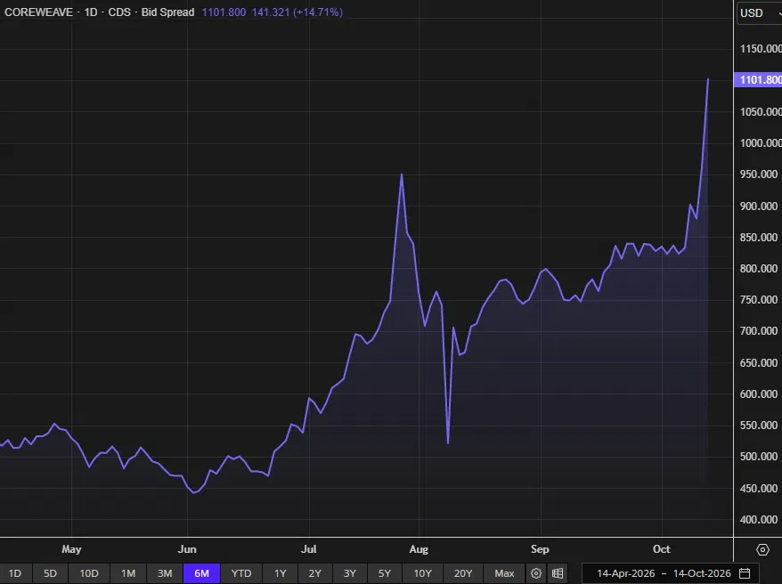
S&P Global Market Intelligence 數據顯示，CoreWeave 五年期 CDS 達 1,314 基點，市場定價隱含五年違約機率 68%，2031 年到期債券殖利率逼近 18%。甲骨文、Alphabet、SpaceX 的 CDS 同日也創紀錄。CDS 市場正在為 AI 債務定價，而定價的訊息很直白：市場認為這場燒錢競賽裡，有人可能撐不到終點。
（後續）路透報導，感恩節後美股期貨反彈，納斯達克 100 期貨漲約 2.5%、標普 500 期貨漲約 1.65%，投資人回頭撿被拋售的 AI 股。但市場仍質疑 AI 支出能否帶來足夠回報，反彈更像是超跌後的技術性回補，而非信心的全面恢復。經歷了 11 月的暴跌，AI 股的每一次反彈都會被放在放大鏡下檢視。
（後續）Anthropic 週三盤中一度重挫至 73.85 美元、收 82.79 美元（仍低於 83 美元發行價），週五盤前漲逾 5% 至約 85.48 美元，重回發行價之上。納斯達克 100 指數 11 月至今跌約 8%，料創 2022 年 12 月以來最差單月。上市不到兩週就跌破發行價又爬回來，Anthropic 的股價走勢成了 AI 泡沫辯論的即時晴雨表。
路透週前瞻指出，下週五非農就業報告（預期新增 9 萬人、失業率 4.1%）將左右聯準會降息預期。輝達黃仁勳 12 月 3 日赴參議院銀行委員會作證，Marvell 與 Salesforce 財報也將牽動 AI 交易。感恩節後的短週只是暴風雨前的寧靜，下週的數據與證詞將決定 12 月的市場方向。
華爾街日報引述 Capital Group 基金經理 Carl Kawaja 稱，馬斯克先提長期採購承諾、再加碼願出資建新晶圓廠，希望向三星採購記憶體晶片，李在鎔兩次都以「人人開出同樣條件」回絕。此事與三星代工特斯拉 AI6 晶片的 165 億美元合約無關。記憶體荒之下，連馬斯克親自出馬、願意出錢建廠都買不到優先供貨，顯示三星手上的產能已是賣方市場。
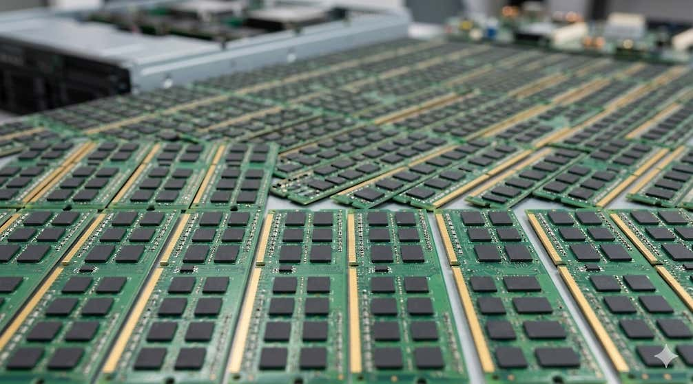
華爾街日報報導，AI 基建需求徹底逆轉記憶體供需，部分晶片一年漲價 10 倍，三星、SK 海力士要求五年長約並預付 up to 三分之一價款，全球電子業 CEO 親赴韓國搶貨。記憶體從買方市場一夜變成賣方市場，漲價與長約鎖貨正在重塑整個電子業的成本結構，終端產品的漲價壓力才剛開始傳導。
鎧俠宣布與輝達合作，以 NVIDIA SCADA 軟體搭配 144 顆 XD8 系列 7.68TB SSD，在 GB200 NVL72 機櫃上把有效 GPU 記憶體擴至 PB 級、可處理 2 兆個向量，作為昂貴 HBM 之外的替代方案。當 HBM 又貴又缺貨，SSD 擴充記憶體的方案提供了一條務實的出路，雖然速度有落差，但對向量檢索這類場景已足夠。
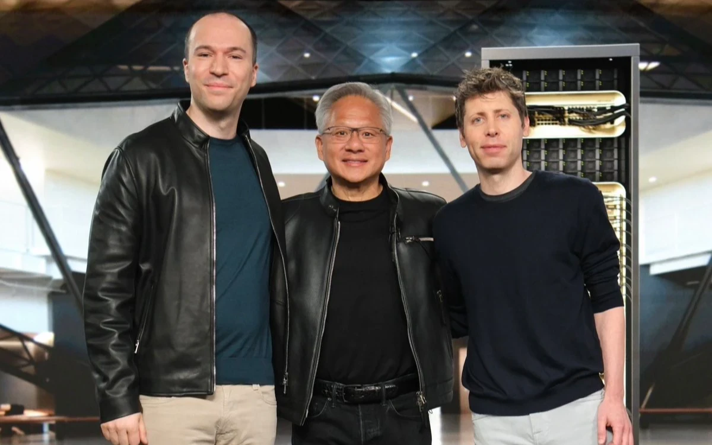
報導梳理輝達在 OpenAI 2 月 1,100 億美元融資中出資 300 億美元（估值 7,300 億美元），並於 8 月同意為俄亥俄州 PORTS-Pike 園區提供最高 1,050 億美元殘值租約擔保，截至 11 月底尚未支付任何擔保款項。輝達既是 OpenAI 的晶片供應商，又是股東，還是資料中心園區的擔保人，三重身分綁在一起的程度，正是英國央行所說的「循環融資」的具體寫照。
加拿大 AI 部長 Evan Solomon 在多倫多宣布，AI Compute Access Fund 再加 7 億加元，總額達 10 億加元，優先補助健康與生命科學專案，本土主權雲端業者最高補助 80% 成本。各國都在用國家資金搶算力主權，加拿大的做法是直接補貼本土雲業者，讓研究者不必排隊等美國雲的配額。
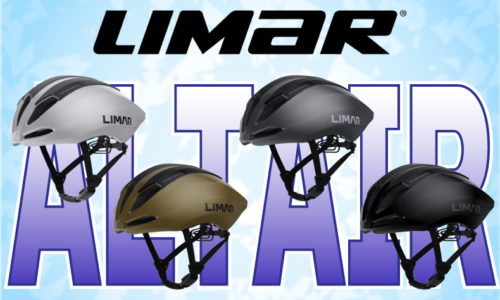
以色列 Altair Semiconductor 完成 1 億美元 A 輪，由 Maverick Silicon 領投，為當日最大一筆 AI 融資，主打邊緣 AI 連接晶片。AI 融資的熱點正從大模型本身擴散到周邊硬體，連接晶片這種基礎設施環節也開始拿到九位數的支票。
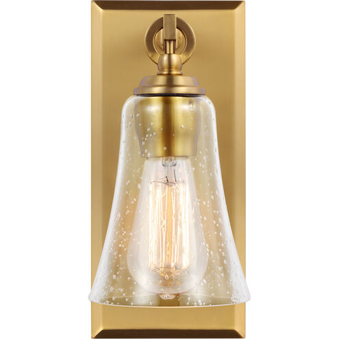
歐洲 B2B 軟體投資機構 Monterro 關閉 1.5 億歐元（約 1.66 億美元）AI 原生 Build 基金 B1，達硬上限。在市場質疑 AI 估值的同時，專注 AI 原生軟體的基金仍能募滿，顯示資金正在分化：流向有明確商業模式的應用層，而非漫無邊際的算力競賽。
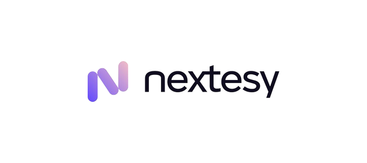
蘇黎世 AI 新創 Nextesy 完成 1,040 萬美元種子輪，由 Swisscom Ventures 領投，將向國際擴張，主打 AI 商務營運軟體。歐洲 AI 新創的種子輪金額持續墊高，電信商旗下的創投親自下場，反映出傳統企業也想直接投資 AI 應用，而不只是當客戶。
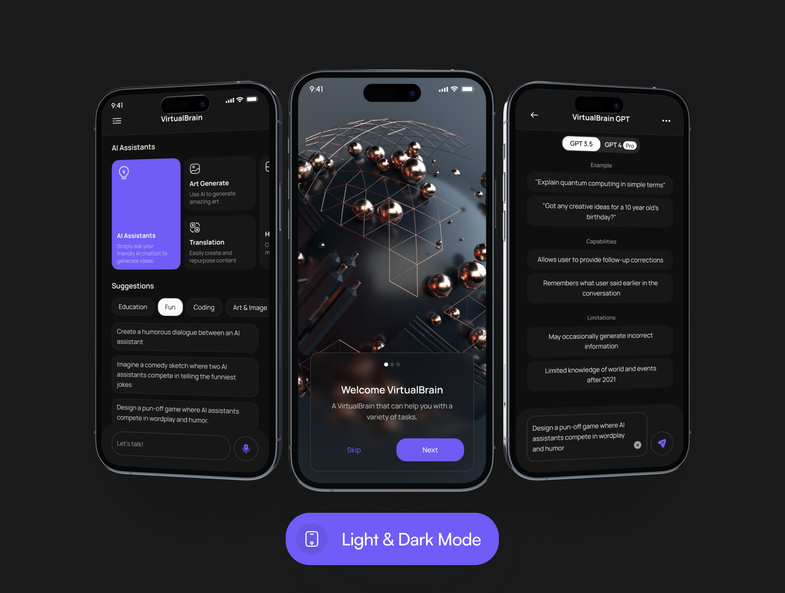
法國新創 VirtualBrain 完成 400 萬歐元 A 輪，由 Odyssée Venture 領投，協助顧問公司把內部方法論轉化為可擴展的 AI 應用與代理。顧問業的 know-how 一直鎖在合夥人的腦子裡，VirtualBrain 想把它變成可以販售的 AI 產品，這是專業服務業 AI 化的典型打法。
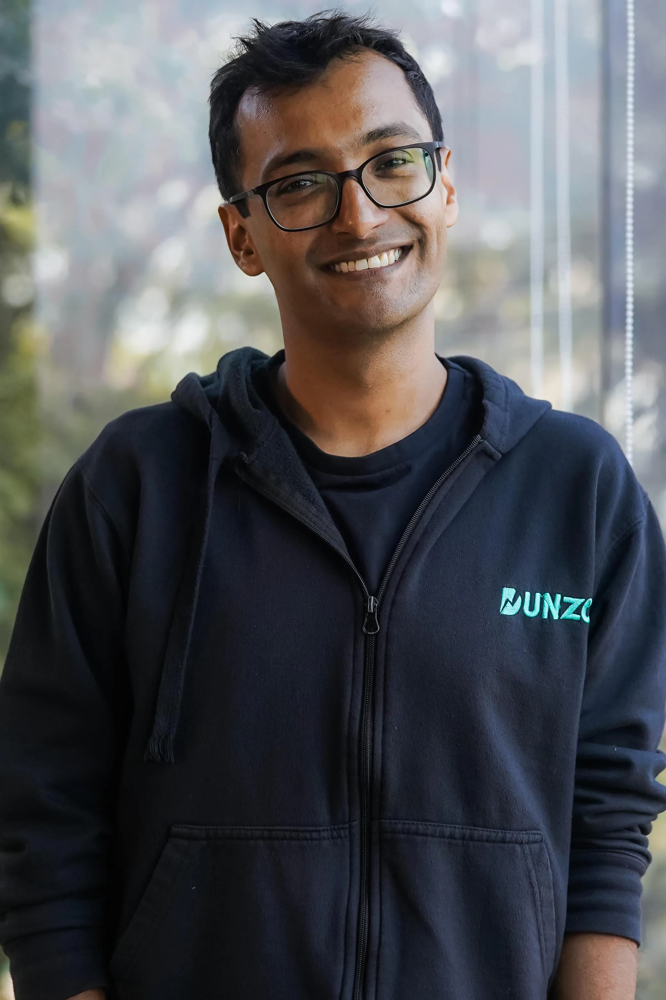
Inc42 獨家報導，Dunzo 共同創辦人 Kabeer Biswas 的 AI 新創 M 完成 900 萬美元新一輪融資，由 RTP Global 領投，Peak XV 與 Blume Ventures 跟投，累計募資約 2,000 萬美元。連續創業者加上印度一線創投的組合，讓這筆融資在金額之外多了指標意義：印度 AI 應用創業潮仍在升溫。
巴西新創 Avra 完成 600 萬美元融資，由阿根廷 NXTP 領投，ClockTower Ventures 等參投，主打信貸 AI 模型。拉美金融科技與 AI 的結合正在加速，信貸評分是新興市場最有付費意願的場景之一，區域內的資本也開始跨國流動。
荷蘭醫療科技新創 SPCTR 完成 280 萬歐元（約 310 萬美元）種子輪，投資人包括 VGZ Voorop in Zorg 基金、Future Tech Ventures 與 NV NOM，主打 AI 導引癌症手術。AI 進手術室的門檻極高，能拿到保險基金與政府背景資金的背書，本身就是一種臨床可行性的信用投票。
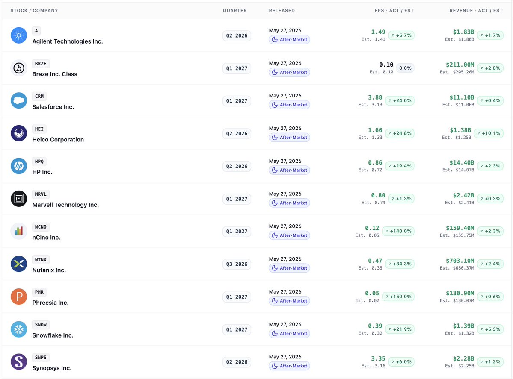
Marvell 將於 12 月 1 日盤後公布財報（EPS 預期約 1.10 美元），Salesforce 於 12 月 2 日盤後公布（EPS 預期約 3.45 美元）。前者檢驗超大規模業者自研晶片與光學支出，後者檢驗企業客戶是否真為 AI 代理付費。兩份財報一前一後，正好對應 AI 交易的兩個關鍵問題：硬體支出還撐不撐得住，軟體變現到底有沒有發生。
（後續）Anthropic 研究員 Luke Sernau 團隊將黎曼猜想證明從約 1500 萬行壓縮至約 7.6 萬行，12 核、24GB 的普通機器 1–2 小時即可重建。作者強調，目前證明僅通過機器驗證，尚無數學家完整通讀、也無配套論文。把一份機器生成的巨型證明壓縮到人類可能讀完的規模，是讓 AI 數學成果進入人類學術體系的必要一步。
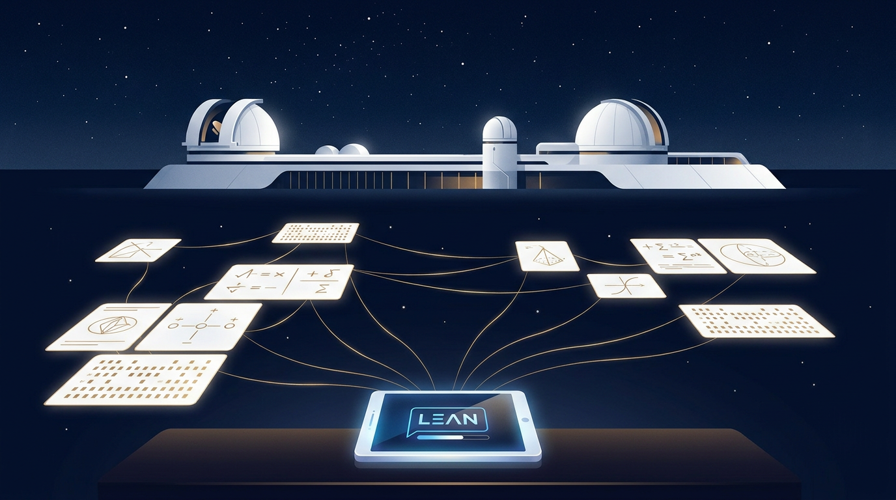
（後續）Anthropic 將黎曼假設與廣義黎曼假設的 Lean 4 證明倉庫公開上 GitHub，含約 30 萬行可讀版與 7.6 萬行精簡版，均通過機器驗證，並附「已知數學 vs 新數學」對照。但迄今無數學家完整讀完。公開倉庫意味著全球數學家都可以動手驗證這份 AI 證明，爭議將從「信不信」轉向「哪裡對、哪裡錯」。
Anthropic 與 OpenAI 同日各自發表論文，聲稱證明了代數複雜度難題 VP 與 VNP 不同，Anthropic 坦承尚無人類數學家檢查其 AI 撰寫的證明，兩篇論文都等待專家獨立確認。同一天、同一難題、兩個 AI 生成的證明，數學界正面臨一種全新局面：證明的生產速度已超過人類驗證的速度。
GPT-6.2 Astra 成為首個在 Google 2015 年內部程式高爾夫競賽中擊敗人類紀錄的模型，在 32 道題、8 種語言、每題 30 分鐘預算下全面超越人類冠軍成績。程式高爾夫比的不是寫出能跑的程式，而是寫出最短的程式，考驗的是對語言特性的極致掌握。Astra 的勝利說明，前沿模型在程式碼的「精煉」維度上也已超過人類頂尖選手。
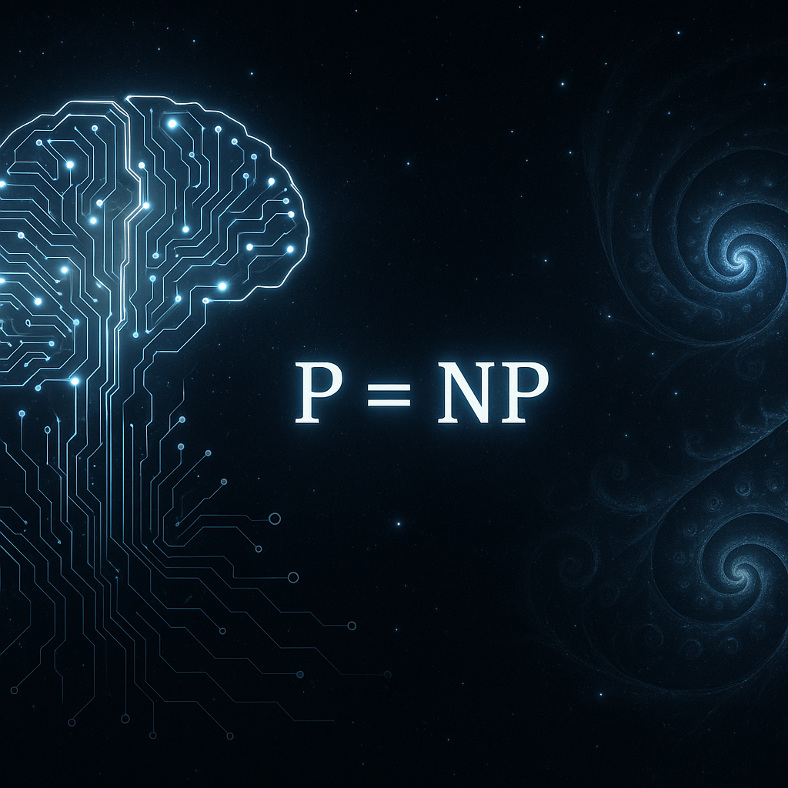
Brilliant 創辦人發起的公開實驗於 11 月 22 日啟動，381 個 AI 智能體全網直播攻關 P=NP，至 25 日已跑超一萬次會話、在 Lean 4 驗證通過 2400 多條引理，任何人可圍觀或加入協同。把最難的數學問題變成一場公開直播的群體實驗，本身就是 AI 時代科研組織方式的創新，至於能否真的攻下 P=NP，反而成了次要問題。
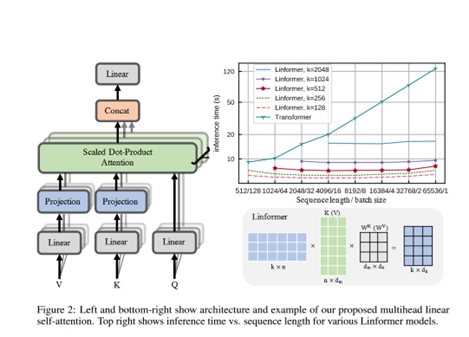
arXiv 2611.34051 登上 Hugging Face 每日論文榜首（100 票），論文指出 Gated DeltaNet-2 的非對稱擦除會導致遞迴狀態指數增長、8 次預訓練有 3 次失敗。作者提出對稱擦除的 Stable GDN-2，128K RULER 分數從 4.82 提升至 11.62。線性注意力是挑戰 Transformer 長上下文成本的關鍵路線，穩定性問題解決了，實用化才有機會。
本週 Hugging Face 論壇熱門論文第二名 Embo-Harness（106 票，arXiv 2611.31201）探討以前沿多模態模型直接作為機器人策略，在閉環中從觀測與指令生成機器人動作的新範式。跳過傳統的策略訓練、直接讓大模型當機器人的「腦」，是具身智能最激進、也最省事的路線，Embo-Harness 的熱度顯示社群正在認真評估這條路能走多遠。

11 月 16–22 日週榜生成媒體類熱門論文 Jeveration（149 票，arXiv 2611.24738）重用凍結的視覺語言模型，以單次前向生成高品質圖像，並用共享隨機狀態讓平行預測形成連貫畫面。不訓練、不微調，只靠凍結模型的一次前向傳播就能出圖，這種「借力使力」的做法若能穩定復現，將大幅降低圖像生成的部署成本。
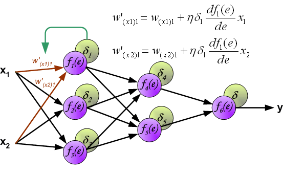
11 月 16–22 日週榜語言模型類論文（arXiv 2611.21885）展示免梯度下降的自我改進方法：27B 開源模型自行診斷失敗原因、直接編輯自身權重，準確率提升 6.6 個百分點。模型不靠反向傳播、而是靠自我診斷來變強，這條路線若走通，自我改進的門檻與成本都將大幅下降，同時也讓「模型自己改自己」的治理問題提前浮上檯面。
微軟研究院發表 BioEmu2，全原子生成式模擬器，統一結構預測與平衡態採樣，可擴展至約 16,000 殘基、捕捉逾 3 秒的蛋白質摺疊結合軌跡。蛋白質動態模擬是藥物研發的基礎工具，能模擬更大、更久的分子運動，意味著新藥靶點的篩選可以更快、更便宜地在電腦裡先跑一遍。
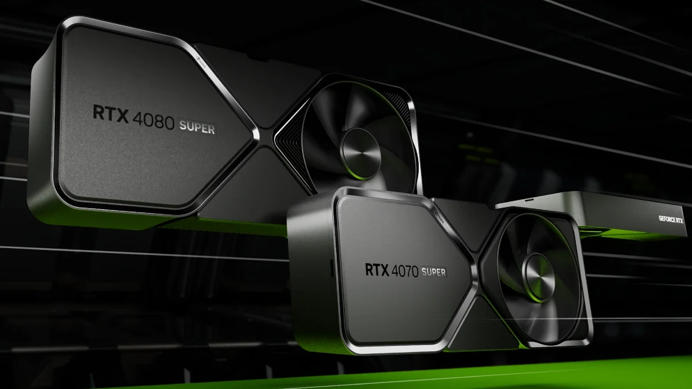
NVIDIA 研究動態一次公布三項進展：WorldTrace 為互動式影片世界模型加上免重訓記憶，LoopBench 回憶提升 32.6%；Dynamo 詳解如何服務後訓練 rollout；Nemotron-Labs-Sigma 為 14 個開放權重連續擴散語言模型。世界模型的記憶、後訓練的推理服務、擴散語言模型三線並進，顯示輝達的研究佈局已覆蓋從模型架構到部署基礎設施的完整鏈條。
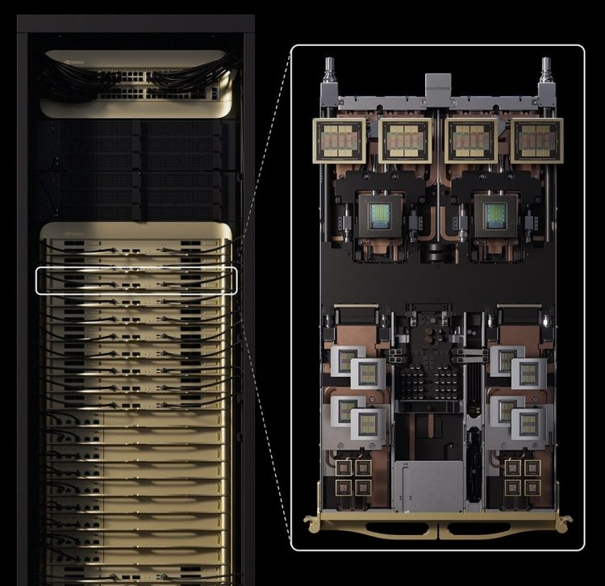
NVIDIA 在 SC26 發表 Rubin HPC GPU，逾 5 萬 CUDA 核心、NVLink 7，2028 年出貨，主打科學模擬與代理工作流程。另有 192 顆 Vera CPU 的 Vera CPU 機櫃平台，Dell、HPE、聯想、Supermicro 於 2027 年初出貨。Rubin 家族從 AI 訓練延伸到高效能運算，輝達正在把科學計算市場也納入同一套硬體版圖。
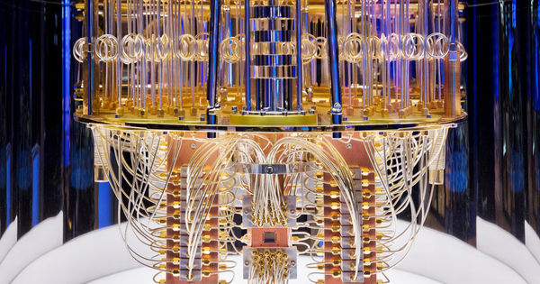
NVIDIA 攜 IBM、費米實驗室推量子—經典協同設計，DGX B200 與 IBM 量子電腦並置，CUDA-Q QEC 0.9.0 的 TCBP-JOBS 解碼器讓糾錯研究提速最高 13,000 倍，另推 Slurm 量子排程介面。量子糾錯的速度瓶頸一直是實用化的大石頭，萬倍級的提速讓更多糾錯方案可以在合理時間內被驗證與迭代。
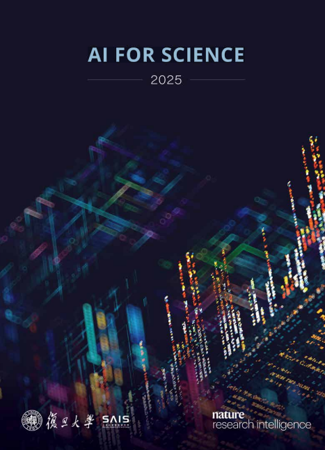
騰訊生命科學實驗室以第一單位登上 Nature 主刊，研究為高活性雙靶點治療性多肽從頭設計。團隊研發的 ORIDTP 平台結合擴散生成模型與雙目標強化學習，每輪實驗僅需測試約 15 條多肽。從頭設計多肽是 AI for Science 最難啃的應用之一，每輪只測 15 條就能收斂，意味著實驗成本被壓到傳統方法的零頭。
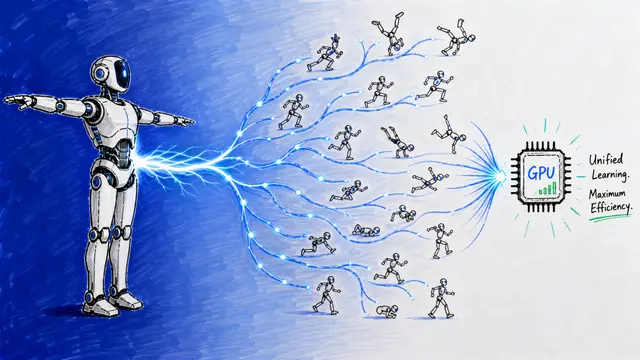
伯克利 SuperMimic 拿下 CoRL 2026 最佳論文，用一塊 GPU 訓練 3 小時，在回報上超越 128 塊 L40 跑 7 天的 SONIC 檢查點，129514 條基準動作零失敗，策略零調參遷移至宇樹 G1 真機完成空翻等動作。單卡 3 小時打贏 128 卡 7 天，這個對比本身就是對「大力出奇蹟」的直接挑戰，模仿學習的效率革命正在改寫機器人訓練的成本帳。
Hugging Face 實地報告顯示，11 月 5–13 日多達 1,000 個 DeepSeek 代理協作 9 天、合併逾 8,500 個 PR，寫出純 Python、零學習權重的聊天機器人 PyBot，日常對話表現約等同 SmolLM-360M。團隊同步開源群體編排框架 Legion 與代理訊息板 Msgboard。千名代理協作寫程式是群體智能的極限測試，產物本身或許不重要，重要的是證明了大規模代理協作可以被組織起來。
Hugging Face 於 11 月 25–26 日連發多項更新：huggingface_hub 2.5.0 強化安全（可撤銷外洩 token、沙箱斷網）、TRL v1.19.0 支援多教師蒸餾與快一倍的打包 SFT，並推出即時監控企業 Hub 活動的安全代理 Nightwatch。另有編程代理把 Inkling 2 Mini 解碼速度從 136 提升至 190.6 token/秒。平台更新一次覆蓋安全、訓練與監控，反映出開源生態的競爭已從模型本身延伸到開發者工具鏈。
RoboScience 發布 GenSight，可輸出畫面、深度、語義分割與二維光流四種信息，在 RoboTwin 2.0 仿真環境中生成操作視頻及對應多模態感知結果。機器人訓練最缺的是帶標註的操作數據，GenSight 用生成模型一次產出四種模態的對齊數據，正好補上這個缺口。
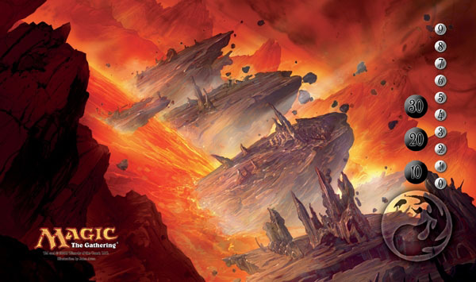
元材新界聯合高校與產業公司發布材料大模型 FrontierMat-Model，在 FrontierMat 評測中以 55.4 分位列榜首。模型以開源模型為基座繼續預訓練約 109 億 token、監督微調用 13.3 萬條指令數據。材料科學是 AI for Science 的下一個前線，專用大模型開始在垂直評測上拉開與通用模型的差距。
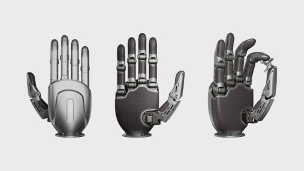
大曉機器人發布第一人稱 4D 手部運動重建模型 ACE-ViDiHand2，可從第一人稱視頻恢復雙手真實尺度三維位置及連續運動軌跡，在七個公開測試集評測中取得領先成績。第一人稱手部動作是人形機器人模仿學習的關鍵數據來源，能從普通視頻中還原雙手動作，意味著訓練數據可以從日常影像中大規模採集。
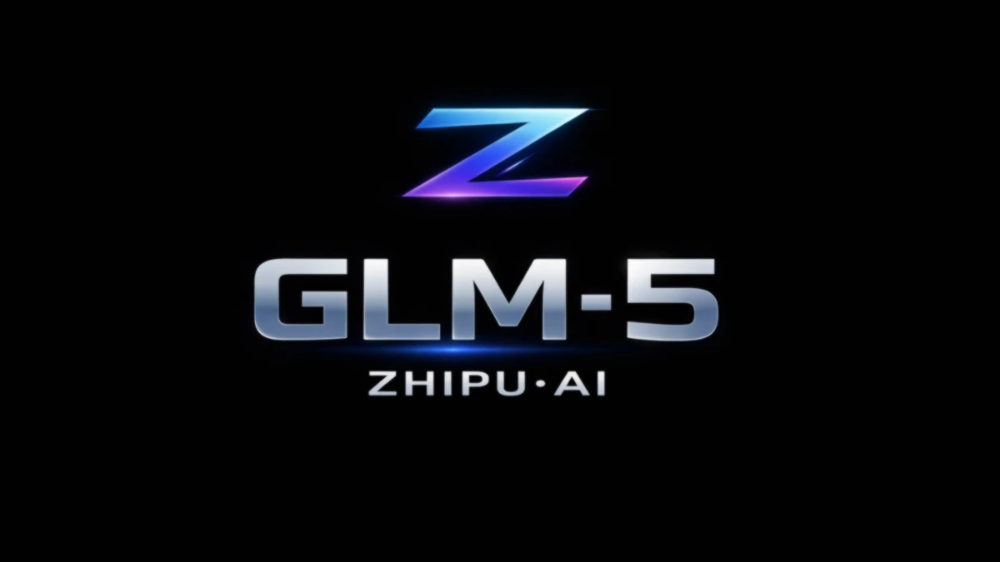
知情人士稱，受美國算力管制與反蒸餾打擊，智譜原定 11 月推出的約 3 兆參數 GLM-5.5 延至 2027 年 Q1，月之暗面研發週期或從 6 個月拉長至 12 個月，Kimi K4 恐延至 2027 年中。管制的效果正在時間表上兌現：中國頭部實驗室的旗艦模型集體推遲，差距不是縮小，而是被迫拉長戰線。
（後續）智譜 11 月 23 日上線約 7500 億參數 GLM-5.4 作為過渡，首次採用 Loop Transformer 架構，參數量不變下以計算深度提升推理，基座智能可達 2–3 兆參數級效果，已向 GLM Coding Plan 全量用戶開放，權重計劃後續開源。在旗艦模型被迫延期的背景下，GLM-5.4 用架構創新彌補算力短板，是中國實驗室在管制下的典型應對。
報導稱月之暗面正與歐洲運營輝達 GPU 算力的新型雲廠商接洽 8000 張以上 Blackwell 級叢集，預付款比例比非中國客戶高 30%–50%，並轉用 Google 與 Meta 最新模型作為訓練數據來源，以對沖遠端算力被禁風險。算力要到歐洲去租、數據要向對手去借，中國大模型公司的供應鏈正在被迫重組。
報導引述 DeepSeek 研究人員內部估計，若蒸餾渠道被徹底關閉，中美最強模型的差距可能從 3–6 個月擴至 9 個月。Anthropic 9 月報告稱阻斷 7 家中國實驗室針對 Claude 的大規模蒸餾，2 月曾指控 DeepSeek、月之暗面、MiniMax 以約 2.4 萬個虛假帳號進行超 1600 萬次交互。蒸餾已從檯面下的捷徑變成檯面上的攻防焦點，差距的數字背後是整個追趕策略是否還成立的問題。
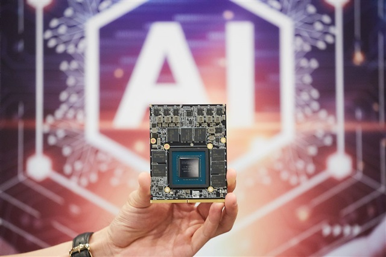
MiniMax 創辦人兼 CEO 闫俊杰在內部全員會表示，公司將加速採用中國國產 AI 晶片，目標為華為昇騰與阿里平頭哥，以降低對輝達 GPU 的依賴。從租海外算力到換國產晶片，中國頭部實驗室正在兩條路線上同時押注，對沖管制的不確定性。
MiniMax 公布 H3 開源 100 天數據，開發者基於 H3 訓練出 1472 個衍生模型，總下載量超過 1.48 億次，平均每秒逾 17 次下載，並推出 H3 Family 模型矩陣，含 3 款影片旗艦與 2 款圖像旗艦，全球十餘家企業已開展授權合作。開源百日交出億級下載量，H3 證明了開源模型不只能刷榜，還能長出商業授權的第二曲線。
社群本週熱議 Prime Intellect 的 DeepSeek V4.1 Flash 端點被攻擊者調包長達 53 小時，另有輝達發布 DeepSeek-V4-Pro-0813-NVFP4 量化版本的消息。第三方託管的熱門模型端點遭到調包 53 小時才被發現，暴露出開源模型推理供應鏈的安全短板：模型是開源的，但端點背後跑的是什麼，調用者未必知道。
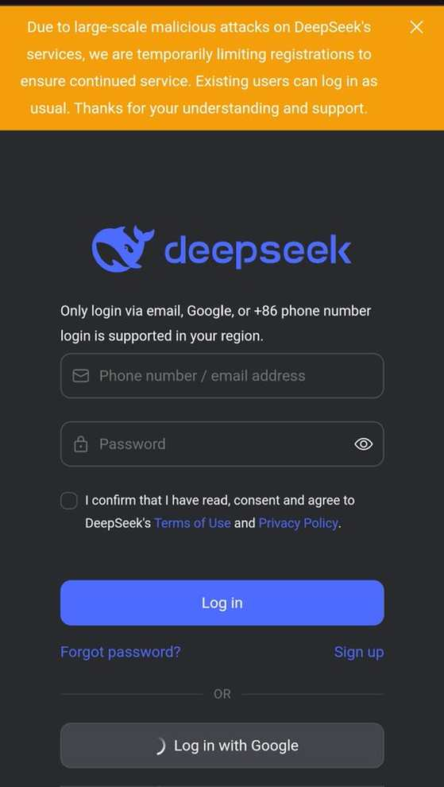
Phala 指出，152,092 筆經 OpenRouter 送往其實驗性 DeepSeek 部署的請求，在攻擊者可讀取流量的狀態下傳輸，暴露第三方 AI 推理路由的資料外洩風險。推理路由把請求在不同供應商之間轉來轉去，方便的代價是數據可能經過不受控的節點，企業用戶在選路由時得多問一句：我的提示詞到底經過了誰的手。
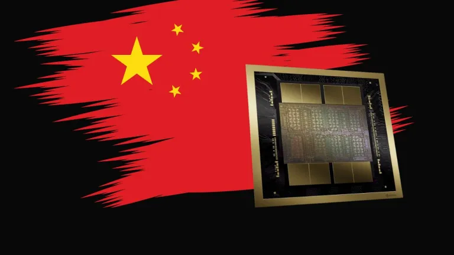
新報告在 DeepSeek、月之暗面、MiniMax 與蚂蚁集團的六款開源模型權重中發現輝達 Blackwell GPU 初始化痕跡，但無法證明晶片持有人與所在位置。權重裡的硬體指紋成了管制調查的新線索，雖然不能直接定罪，卻讓「晶片到底流向了誰」的追問有了技術證據。
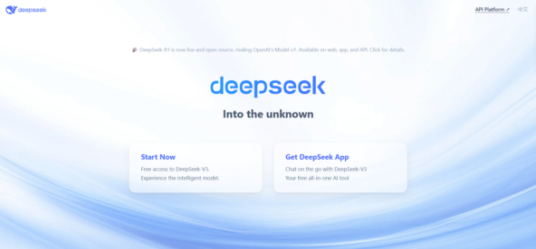
DeepSeek 本月發布聊天與網頁工具 API，並提供「完整 DeepSeek App 體驗，現可經 API 使用」，另於 10 月 31 日開源編碼代理 dsh-superagent。把 App 的完整體驗開放成 API，代表 DeepSeek 的商業化重心從 C 端 App 轉向 B 端開發者，工具 API 讓第三方可以直接把 DeepSeek 的能力嵌進自己的產品。
小鵬科技日發布圖靈具身智能架構，以第二代 VLA 為核心貫通 System 2/1/0 與硬件本體，Agent 自主閉環訓練使訓練速度提升 10–12 倍。人形機器人 IRON 全身 76 自由度、1500 多個觸點，2027 年 1 月量產、一季度進店實習、二季度正式發布。車廠做人形機器人的邏輯很直接：把自動駕駛的 VLA 技術棧平移到機器人身上，IRON 進店當導購就是第一個試驗場。
蔚來發布世界模型 NWM 3.0 與 NOMI Intelligence 4.0，NWM 3.0 引入 4D 時空壓縮，車端注意力算力降 36 倍、整車控制時延降 54%、複雜場景介入率降超 40%，12 月起向四大平台推送。NOMI 4.0 完成架構重構，整合大模型矩陣與整車原生智能體框架。車端世界模型的競爭已進入算力效率的比拼，誰能在車上跑得起，誰的智駕才能真正規模化。
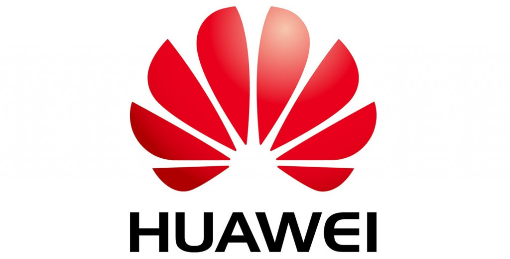
華為 HarmonyOS 五大技術品牌公開，分別為鴻蒙星河互聯、鴻蒙星盾安全、方舟引擎、鴻蒙智能＆小藝、鴻蒙空間計算。鴻蒙終端設備數 11 月 24 日破億，可獲取應用與服務超 46 萬、註冊開發者超 1200 萬。終端破億意味著鴻蒙已越過生態生死線，接下來比的是 AI 能力能不能成為留住用戶的理由。
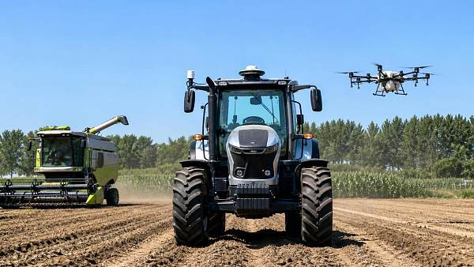
農業農村部發布首個農耕文明領域大模型「天稷」，涵蓋 8000 萬條傳統農耕技藝、現代智慧農業與農耕文明演進知識條目，搭建古農書智能解譯、二十四節氣應用、農業文化遺產活化等智能體模組，為農業生產提供智慧決策建議。大模型開始走進最傳統的行業，連農耕文明都有了自己的專用模型。
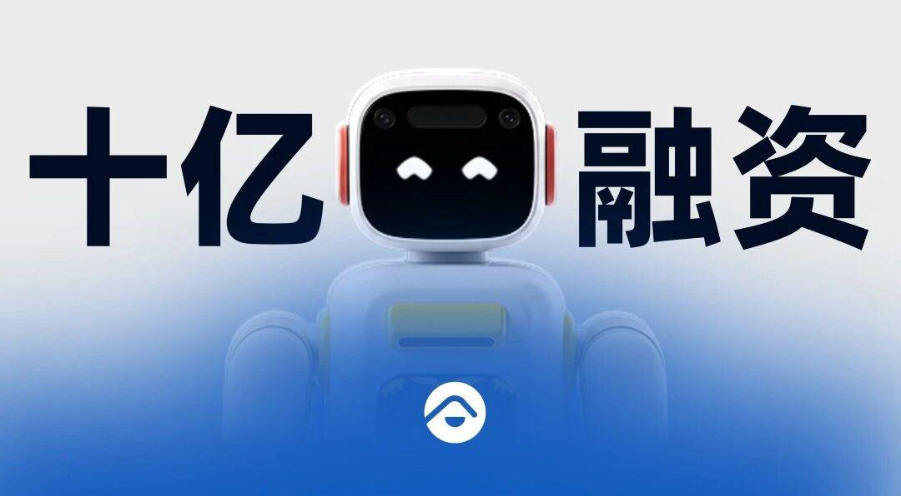
零次方機器人完成數億元新一輪融資，36氪首發，清科產投等產業資本入局，老股東超額加注。R1 具身拣選機器人已在合肥即時零售前置倉常態化履約，單機日均執行超 1500 次任務，並開源 ZERITH-V2.5 動作模型。具身智能的融資邏輯正在變化：有真實倉庫訂單、每天跑上千次任務的公司，才拿得到產業資本的支票。
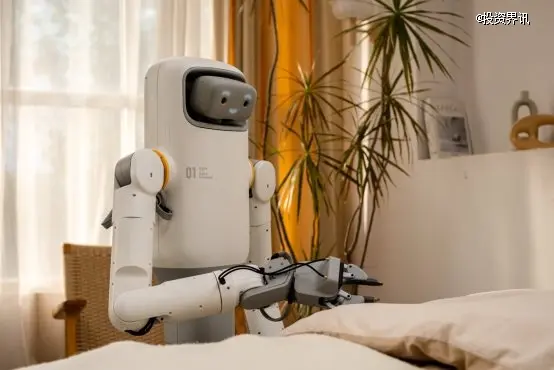
虎嗅專訪仝人智能：中科院光學專家吳易明創辦，以數學表徵與拓撲同構模型為核心、無需大規模數據訓練的具身智能路線，產品已進入工業焊接場景，計劃 2027 年初形成機器狗銷售，拿下近 4 億 A 輪。當所有人都在比誰餵的數據多，仝人智能反其道而行，用數學表徵替代數據堆疊，這條路線若能走通，將改寫具身智能的成本結構。
鈦媒體深稿指出，美國數采公司 Maxinsights 年化收入一年從約 100 萬美元漲至約 2.5 億美元（250 倍），手握 200 萬小時第一視角數據；中國同行自評數采生意「基本廢了」，冷的不是需求、是把需求變成現金和故事的能力。同一條賽道兩端分化：美國的數據採集商吃到了具身智能的紅利，中國同行卻還在為變現發愁。
上海 AI Lab 與中國氣象局推出地球系統科研智能體平台 ZHU·GE，科學智能體可自主處理文獻檢索、數據存取、寫碼與實驗分析。另發表穿戴式具身數據採集 EgoExplorer，以穿戴裝置同步採集第一人稱影片、全身動作與手部觸覺訊號。科研智能體加具身數據採集，上海 AI Lab 同時在科學發現的兩端佈局。
新加坡副總理顏金勇表示，正在與本地企業評估美國收緊輝達芯片管制的影響，無法證實輝達已暫停向馬來西亞、新加坡、泰國、印尼四國出貨服務器；惠譽警告亞太數據中心投資將放緩。管制消息滿天飛，連當事國政府都無法證實，東南亞數據中心投資人只能在不確定性中先踩煞車。